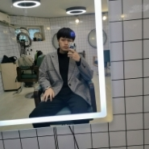

| 自我介绍 | ||||||
|---|---|---|---|---|---|---|
| 姓名: | 涂春旺 | 年龄: | 21 | 民族: | 汉 |  |
| 出生: | 2001.3.2 | 政治面貌: | 团员 | 学历: | 本科 | |
| 专业: | 计算机科学与技术 | 目前就读学校: | 四川轻化工大学 | 性别: | 男 | |
| 爱好: | 打游戏、听音乐、健身 | 籍贯: | 成都 | 邮箱: | ||
| 个人特长: |
1.略懂c语言 2.略懂数据结构 3.略懂电脑、手机硬件 |
|||||
| 自我介绍: |
1.我来自四川省成都市的一个普通家庭。 2.我从小就热爱捣鼓电脑和手机，说白了就是爱打游戏。在游戏里能让我获得快乐。也因为爱打游戏也没少和家人产生分歧。 3.不过经过高考的失利我更加确定了我的目标。在大专时期我就有了专升本的打算，下决心从大学里重新开始，刻苦努力的读书不断突破自己。 | |||||
| 总结: |
1.严格要求自己，凭着对个人目标和知识的强烈追求，刻苦钻研，勤奋好学，态度端正，目标明确。 2.基本上牢固的掌握了一些专业知识和技能，同时把所学的理论知识应用于实践活动中，把所学知识转化为动手能力、应用能力和创造能力，力求理论和实践的统一。 3.在学习和掌握本专业理论知识和应用技能的同时，还注意各方面知识的扩展，广泛的涉猎其他学科的知识，从而提高了自身的思想文化素质，为成为一名优秀的大学生而不懈奋斗。 | |||||